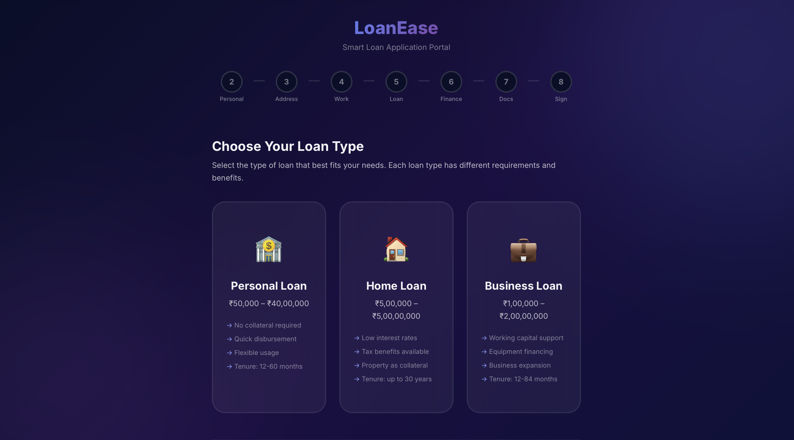
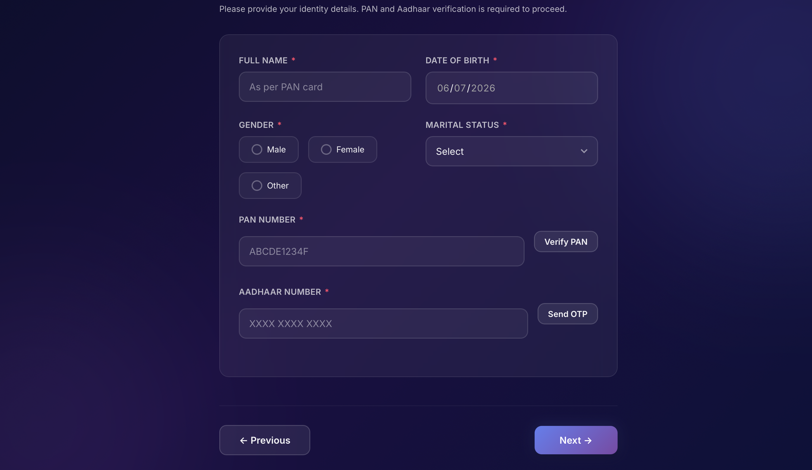

LoanEase is a modern, responsive, multi-step web application designed to streamline and digitize the loan application process. Traditional loan applications involve lengthy paper forms, multiple branch visits, and a cumbersome manual verification process. LoanEase addresses these pain points by providing an intuitive, guided digital experience that allows applicants to complete their entire loan application online.
The application supports three major loan categories — Personal Loans, Home Loans, and Business Loans — each with tailored form fields, validation rules, and conditional steps. The project is built entirely with modern vanilla JavaScript (ES6+), HTML5, and CSS3, powered by Vite as the build tool, demonstrating that sophisticated web applications can be developed without heavy framework dependencies.
| Category | Technology | Purpose |
|---|---|---|
| Markup | HTML5 | Semantic page structure, accessibility |
| Styling | CSS3 (Vanilla) | Custom properties, animations, responsive layout |
| Logic | JavaScript (ES6+) | State management, DOM manipulation, validation |
| Build Tool | Vite 8 | Hot Module Replacement, optimized production builds |
| Testing | Playwright | Cross-browser End-to-End testing |
| Version Control | Git + GitHub | Source code management and collaboration |
The decision to use vanilla JavaScript instead of a framework like React or Vue was deliberate. It demonstrates a deep understanding of core web fundamentals — DOM APIs, state management patterns, component architecture, and event handling — without the abstraction layer that frameworks provide. This approach results in a smaller bundle size, faster load times, and zero external runtime dependencies.
The application follows a component-based architecture with a centralized state management pattern, similar to frameworks like Redux but implemented manually. The key architectural principles are:
A single JavaScript object holds all application state — current step index, form field values, uploaded documents, and signature data. All components read from and write to this central state through a controlled handleFieldUpdate() function.
Each form step is an isolated module that exports a render() function (which returns a DOM element) and a validate() function (which returns validation results). The main orchestrator calls these functions based on the current step index.
Common UI elements — progress bar, toast notifications, modals, file uploader, and signature pad — are extracted into standalone component modules that can be instantiated anywhere in the application.
src/main.js)The main entry point that initializes the application. It manages centralized state, orchestrates step rendering, handles navigation (Previous/Next), binds the progress bar, triggers auto-save on field updates, and manages the submission flow with a dynamically generated reference number.
| Component | Description |
|---|---|
progress-bar.js | Renders a numbered step indicator with clickable completed steps, connector lines, and active/completed states. |
toast.js | Non-blocking notification system supporting success, error, info, and warning types with auto-dismiss. |
modal.js | Reusable modal dialog with customizable title, body, action buttons, and optional close behavior. |
file-uploader.js | Drag-and-drop file upload with file type validation, size limits, preview thumbnails, and image compression. |
signature-pad.js | HTML5 Canvas-based signature capture with drawing, clearing, and data export (Base64 PNG). |
| Step | Title | Fields & Logic |
|---|---|---|
| 1 | Loan Type | Selection cards for Personal, Home, or Business Loan with descriptions and amount ranges. |
| 2 | Personal Info | Full name, DOB, gender, marital status, PAN verification, and Aadhaar OTP verification. |
| 3 | Contact & Address | Email, phone, full address with pincode auto-fill (city/district/state), residence type. |
| 4 | Employment | Conditional fields — salaried (company, designation, income) vs. self-employed (business details, GST, turnover). |
| 5 | Loan Details | Loan amount slider, tenure selector, purpose, and real-time EMI calculator with interest rate display. |
| 6 | Financial Info | Existing loan obligations, credit score, bank account details with IFSC validation. |
| 7 | Collateral | (Conditional — Home & Business loans only) Property type, location, value, age, and ownership details. |
| 8 | Documents | Upload identity proof, address proof, income proof, and bank statements with image compression. |
| 9 | E-Signature | Canvas signature pad with terms & conditions acceptance and date stamp. |
| 10 | Review & Submit | Full summary of all entered data with edit links back to specific steps, final submission button. |
| Utility | Description |
|---|---|
validation.js | Comprehensive field validation rules including required checks, email/phone regex, numeric ranges, and custom validators. |
pan-aadhaar.js | Indian PAN card format validation (AAAAA0000A) and Aadhaar number validation (12-digit with Verhoeff check). |
address-autocomplete.js | Pincode-based auto-fill of city, district, and state fields using a built-in lookup database. |
autosave.js | Debounced LocalStorage persistence with save indicator, state restoration, and time-since-last-save display. |
image-compress.js | Client-side image compression using Canvas API to reduce file sizes before upload. |
The following describes the end-to-end user journey through the application:
The application breaks a complex loan form into 10 manageable steps, each with its own validation. A visual progress bar at the top shows completed, current, and upcoming steps. Users can click on completed steps to navigate back and edit.
The Collateral step (Step 7) is dynamically included or excluded based on the selected loan type. The progress bar, step numbering, and navigation all adapt automatically.
In the Loan Details step, users can adjust the loan amount and tenure using interactive sliders. The Equated Monthly Installment (EMI), total interest payable, and applicable interest rate are calculated and displayed in real time.
The application validates Indian PAN card numbers against the standard alphanumeric format (AAAAA0000A) and Aadhaar numbers using the 12-digit format. A simulated OTP verification flow is provided for Aadhaar.
When users enter a 6-digit Indian pincode, the city, district, and state fields are automatically populated using a built-in lookup utility, reducing manual entry and errors.
Uploaded document images are automatically compressed using the HTML5 Canvas API before being stored, reducing memory usage and improving performance without any server-side processing.
All form data is automatically saved to the browser's LocalStorage using a debounced save mechanism. If the user closes the browser and returns later, they are prompted to resume their application from where they left off.
A canvas-based signature pad allows users to draw their signature using mouse or touch input. The signature is captured as a Base64-encoded PNG image and included in the final review.
The application features a carefully crafted dark theme with CSS custom properties, gradient backgrounds, glassmorphism effects, smooth micro-animations, and modern typography for a premium look and feel.
The application includes a comprehensive End-to-End (E2E) test suite built with Playwright, covering all critical user flows and edge cases.
| Test File | Coverage Area |
|---|---|
full-flow.spec.js | Complete application flow from loan type selection to submission |
personal-loan.spec.js | Personal loan specific fields and flow (no collateral step) |
home-loan.spec.js | Home loan flow with collateral step inclusion |
business-loan.spec.js | Business loan flow with self-employment fields and collateral |
validation.spec.js | Field-level validation rules (email, phone, PAN, Aadhaar, etc.) |
documents.spec.js | Document upload, file type validation, and compression |
signature.spec.js | Signature pad drawing, clearing, and data capture |
autosave.spec.js | Auto-save persistence, session restoration, and "Start Fresh" logic |
# Install dependencies npm install # Run the development server npm run dev # Run Playwright tests npx playwright test # Run tests with a visual UI npx playwright test --ui

Figure 1: Landing page with loan type selection — Personal, Home, and Business loan cards with progress bar.

Figure 2: Personal information step showing KYC fields — Full Name, DOB, Gender, PAN verification, and Aadhaar OTP.
The LoanEase project demonstrates the development of a production-quality, multi-step loan application using modern web technologies without relying on heavy frontend frameworks. The application showcases strong competencies in:
The project is fully version-controlled on GitHub and ready for extension with backend services, authentication, and real-world KYC integration.